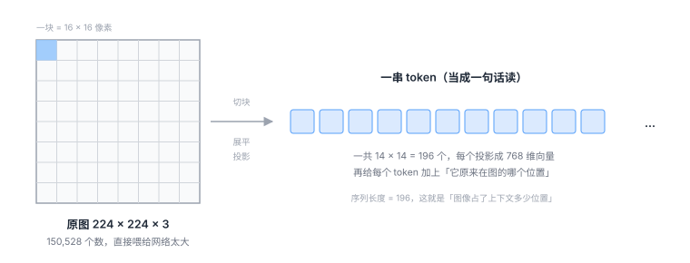

2.1 视觉：一张图怎么变成一串数字¶
图像本来就是数字¶
一张 640×480 的彩色照片，在计算机眼里是这样的：
三个通道分别是红、绿、蓝。就这么简单，没有任何神秘的东西。
所以「让机器看懂图」这件事，字面上就是把 92 万个数字变成一句「桌上有红杯子」。
问题在于：92 万个数字里，绝大部分是冗余的。
一片白色的墙，占了 20 万个数，但它们几乎一样。真正有用的信息——杯子的边缘在哪、盘子是什么形状——只藏在少数地方。
如果直接把 92 万个数字丢进网络，会同时遇到两个麻烦：
- 参数爆炸：假设第一层有 1000 个神经元，光这一层就要 9 亿个参数。
- 没有先验：网络不知道「相邻的像素通常是相关的」这件事，得从零学起。而这条先验是人类早就知道的常识。
所以所有视觉模型的第一个任务，都是把这堆数字重新组织成更有结构的形式。
历史上出现过两种组织方式。
老办法：卷积（CNN）¶
卷积网络的想法非常朴素：
类比
拿一个 3×3 的小窗口，在整张图上从左到右、从上到下慢慢滑动。
每滑到一个位置，就看一眼这 9 个像素，判断「这里有没有一条竖边」「这里是不是一块红色」。
同一个窗口，滑遍全图——这就是「权重共享」。
这个设计有两个漂亮的先验：
- 局部性：判断一个像素是什么，主要看它周围。这符合直觉。
- 平移不变：同一个「竖边检测器」在图的左上角和右下角都适用。所以不用为每个位置单独学一套。
CNN 统治了视觉十年，到今天依然是很多系统的骨架。
但它有个特点，在 VLA 这里变成了缺点：它的输出是一张「特征图」，不是一个「序列」。
而语言模型的输入必须是序列。要把 CNN 的输出接进语言模型，就得额外做一步转换。
ViT 把这个转换直接省掉了。
新办法：把图当成一句话来读（ViT）¶
ViT（Vision Transformer）的做法，一句话说完：
把图切成小块，每块当成一个「词」。

具体分四步：
① 切块（patchify）
224×224 的图，按 16×16 切成 14×14 = 196 块。
每一块是 16×16×3 = 768 个数。
② 展平 + 投影
把每块的 768 个数拉成一条，再用一个线性层映射成模型需要的维度（比如也是 768）。
于是 196 块变成了 196 个向量。
③ 加位置编码
这一步极其关键，而且经常被跳过。
Transformer 的自注意力机制有一个特点：它对顺序完全不敏感。你把 196 个 token 打乱喂进去，输出是一样的（只是顺序也跟着乱）。
但图像是有空间结构的。左上角那块和右下角那块，含义完全不同。
所以必须给每个 token 额外加一个「我原来在第几行第几列」的标记。这个标记就是位置编码（positional encoding）。
类比
把一篇文章的所有字剪下来，装进一个袋子，再倒出来——字都在，但句子没了。
位置编码就是给每个字背后写上「我原来是第 37 个字」。
④ 送进 Transformer
到这里，196 个 token 和一句 196 个词的句子，在形式上完全一样了。可以用同一个 Transformer 处理。
这也是 VLA 能用「一个模型搞定三个模态」的根本原因：只要都能表示成 token 序列，架构就可以复用。
卷积和 ViT 的真正区别¶
不只是「一个用窗口、一个用切块」。更深层的区别在于信息怎么流动。
| CNN | ViT | |
|---|---|---|
| 一块信息能看到多远 | 只看邻居（3×3）；要扩大范围得堆很多层 | 一层就能看到全图任意位置 |
| 先验 | 强（局部性、平移不变） | 弱（几乎不假设什么） |
| 需要的数据量 | 少 | 多 |
| 输出形式 | 特征图 | 序列 |
「一层就能看到全图」这件事，在机器人场景里很重要。
因为机器人经常需要远距离的关联：「我手上这个杯子」和「远处那个盘子里还剩多少空间」——这两个信息在图上隔得很远，CNN 要堆很多层才能把它们联系起来，ViT 一层就够。
代价是：ViT 需要更多数据才能学好。这也是为什么 ViT 一直到 2020 年之后、有了大规模预训练才真正流行起来。
特征到底学到了什么¶
不管用 CNN 还是 ViT，编码器输出的向量都有一个共同特点：层次性。
越深，越接近「语义」，越远离「像素」。
这一点对 VLA 有直接影响：
- 抓取需要精确的空间位置，所以浅层特征有用；
- 「红杯子」这个概念需要语义理解，所以深层特征有用。
只用一种，总会缺一块。
所以现代 VLA 常常用两个编码器¶
这是一个很实用的设计细节，看论文时经常遇到。
以 OpenVLA 为例，它的视觉部分同时用了两个编码器：
| 编码器 | 训练方式 | 擅长什么 | 在 VLA 里的作用 |
|---|---|---|---|
| DINOv2 | 自监督（不看文字，只看图与图的关系） | 空间结构、边缘、物体边界，非常锐利 | 告诉模型「东西在哪、边界在哪」 |
| SigLIP | 图文对比学习（看图配文） | 语义，「这是杯子」和「杯子」这个词对齐 | 告诉模型「这是什么」 |
然后把两者的特征拼起来（各取一半维度），作为视觉输入。
为什么这么干？因为它们互补：
- DINOv2 不知道「杯子」这个词，但对物体轮廓极其敏感——抓取需要这个；
- SigLIP 知道语义，但对精细空间位置的敏感度不如 DINOv2。
只用一个，都会在某方面吃亏。拼起来，两边的好处都要。
看到双编码器不要慌
论文里写成 fused_vision = concat(DINOv2(img)[:1024], SigLIP(img)[:1024]) 这种形式时，
意思就是「两个特征各取一半，接在一起」。
这不是什么高深设计，就是「两个专家投票」的工程实现。
一个被忽略的成本：token 数量¶
这一点很少有人在小白教程里讲，但它决定了很多架构选择。
图像会占掉语言模型上下文的一大块。
算一笔账：
- 一张 224×224 的图，patch 16 → 196 个 token
- 如果接两路相机（第三人称 + 手腕），就是 392 个
- 如果堆 3 帧历史，就是 1176 个
- 一个典型 7B 语言模型的上下文窗口是 4096 个 token
图像已经吃掉了四分之一还多。 剩下的空间要放指令、要生成动作，很紧张。
所以你会看到各种各样的压缩手段：
- 降低分辨率：224 而不是 448，token 数直接少四倍；
- 池化/重采样：用一个小网络把 196 个 token 压成 64 个（Q-Former、Perceiver 这类结构）；
- 只取部分层：不用最后一层，用中间某层的特征；
- 单相机：很多系统只用一路相机，就是为了省 token。
类比
上下文窗口像一个背包，容量固定。
图像是一台很占地方的相机，指令是一张纸，动作输出是你要带回来的东西。
相机带多了，纸就放不下，东西也没地方装。所以必须在「看得清楚」和「装得下别的」之间取舍。
这个矛盾在后面讲「推理速度」（6.1 节）时会再次出现——压缩 token 不只是省显存，也直接决定了模型能跑多快。
相机怎么摆，也是个设计问题¶
VLA 的输入常常不止一路相机。常见组合：
| 相机 | 位置 | 优势 | 劣势 |
|---|---|---|---|
| 第三人称 | 固定在场景上方或侧面 | 能看到全局，知道自己和物体的相对关系 | 被遮挡就完蛋；视角一变就失效 |
| 腕部相机 | 装在末端执行器上 | 抓取时看得最清楚，不受遮挡 | 看不到自己要去的目标在哪 |
只用第三人称，抓取精度差；只用腕部，找不到目标。
所以主流做法是两个都用，让模型自己融合。代价是 token 翻倍——又回到上面那个矛盾。
一句话总结这章¶
视觉部分做的事，就是把一个二维的像素阵列，重新组织成一个 Transformer 能读的序列，并且尽量保留空间精度和语义信息。
切块是为了变成序列，位置编码是为了不丢空间结构，双编码器是为了兼顾「在哪」和「是什么」，压缩是为了省上下文。
四个动作，四个动机，没有一个是随便设计的。
自测三问
- 如果没有位置编码，ViT 会发生什么？为什么 Transformer 本身「不在乎顺序」？
- 为什么现代 VLA 常常同时用 DINOv2 和 SigLIP？它们各自补上了对方的什么短板？
- 图像 token 太多会带来什么连锁反应？至少说出两条，一条关于训练，一条关于推理。
视觉编码的核心动作：切块变序列、加位置编码保空间、双编码器兼得「在哪」与「是什么」、压缩省上下文。